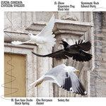

Music Reviews
-
Beverly Careers
The latest project by songwriting duo Drew Citron and Frankie Rose respects the traditions of guitar pop with a batch of fuzzy, sweetly-attuned pop songs that demonstrates their years of experience within their tight-knit musical circle.
Juan Edgardo Rodríguez reviews... -

Ed Sheeran X
Sheeran's got a copyright on sentimental guitar slowies and his upbeat jams have ''#1 hit'' written all over them, but is X worthy of a second listen?
Luiza Lodder is wondering... -

Total Control Typical System
The Australian six-piece follow their art rock debut with Typical System, a largely cerebral effort that adopts the merry exultation of new wave into their urgent post-punk leanings.
Juan Edgardo Rodríguez reviews... -

Boris Noise
Category continues to elude the multi-genre bent of Boris as Noise, the latest addition to the trio's extensive discography, summarizes its contemporized leanings in the loudest (and best) way possible.
Sean Caldwell felt the noize... -
Owen Pallett In Conflict
Following hot on the heels of an Oscar-nomination and numerous collaborations, In Conflict might be the ever-ambitious Owen Pallett's most ambitious work yet.
Mark Davison is a bit conflicted about this one... -
The Antlers Familiars
Following the direction they teased in 2012's Undersea, it should be more than clear on the strength of Familiars that The Antlers are for real.
Forrest Cardamenis reviews... -

Jack White Lazaretto
Jack White has ascended to levels of rock royalty, but he has never seemed so uncomfortable. And that's a good thing.
Forrest Cardamenis visits the... -

Fucked Up Glass Boys
Yes, the latest from ambitious punks Fucked Up steers away from the enormous rock-opera spectacle approach and settles into simply making a Fucked Up album. But is this still any reason to not give it your attention?
Peter Quinton reviews Fucked Up's latest... -

Howling Bells Heartstrings
After a storming eponymous debut, Australian quartet Howling Bells took a detour up dull street with the largely disappointing follow up Radio Wars (2009), which was in turn followed by another lacklustre effort, The Loudest Engine in 2011. So is album number 4 another letdown, or does it mark a belated return to form?
Graeme Marsh reviews... -

Sharon Van Etten Are We There
Sharon Van Etten has crafted another masterful record, singing about love in a manner that's open, sincere and relatable to anyone who's been in a relationship.
Joe Marvilli listens to Sharon Van Etten pour her soul out again...